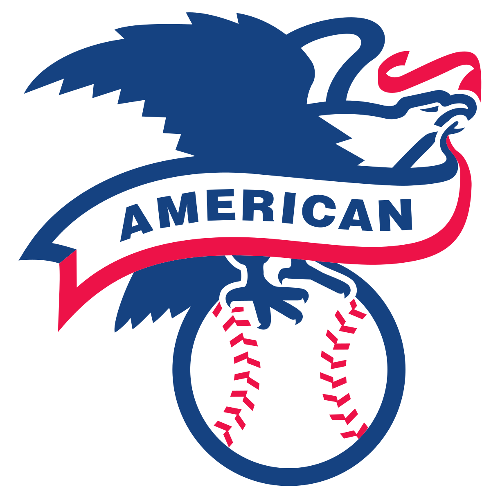

The American League of Professional Baseball Clubs, known simply as the American League (AL), is one of two leagues that make up Major League Baseball (MLB) in the United States and Canada. It developed from the Western League, a minor league based in the Great Lakes states, which eventually aspired to major league status. It is sometimes called the Junior Circuit because it claimed Major League status for the 1901 season, 25 years after the formation of the National League (the "Senior Circuit").
At the end of every season, the American League champion plays in the World Series against the National League champion; two seasons did not end in playing a World Series (1904, when the National League champion New York Giants refused to play their AL counterpart, and 1994, when a players' strike prevented the Series). Through 2020, American League teams have won 66 of the 117 World Series played since 1903, with 27 of those coming from the New York Yankees alone. The New York Yankees have won 40 American League titles, the most in the league's history, followed by the Philadelphia/Kansas City/Oakland Athletics (15) and the Boston Red Sox (14).